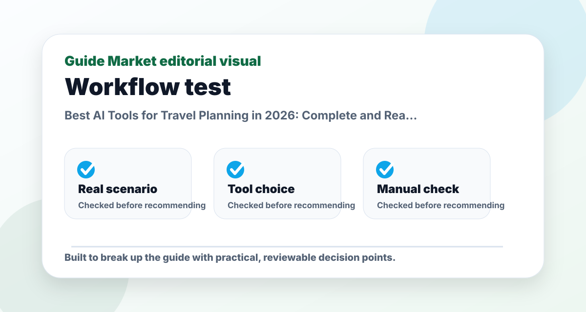
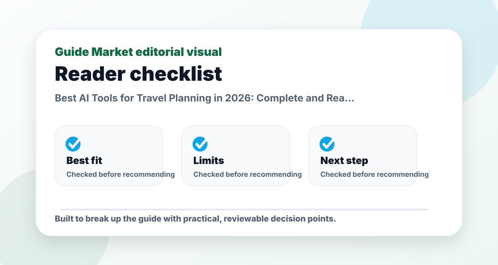
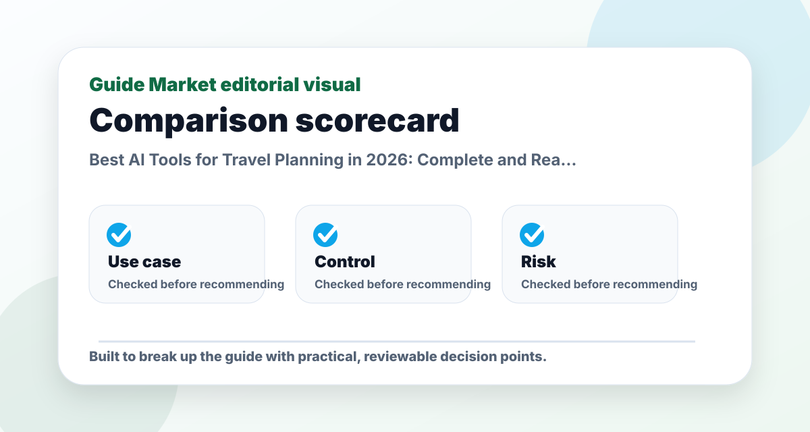
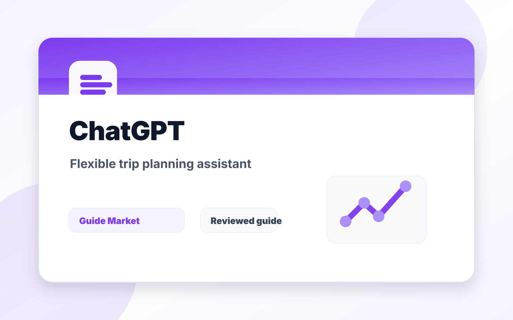
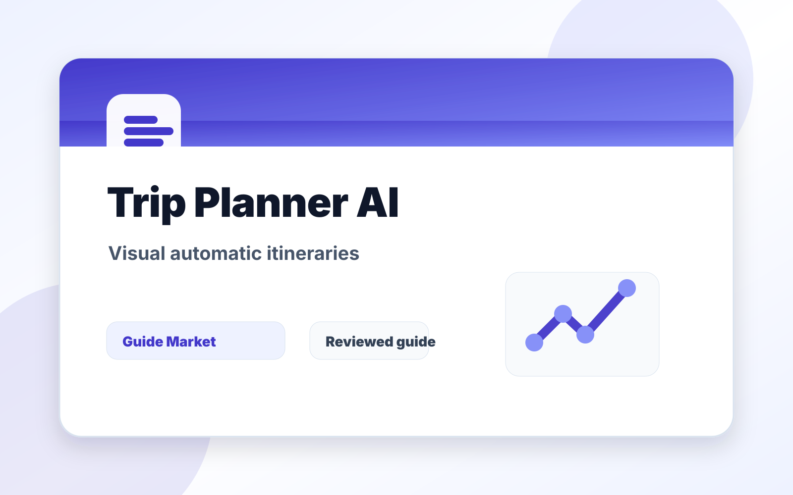
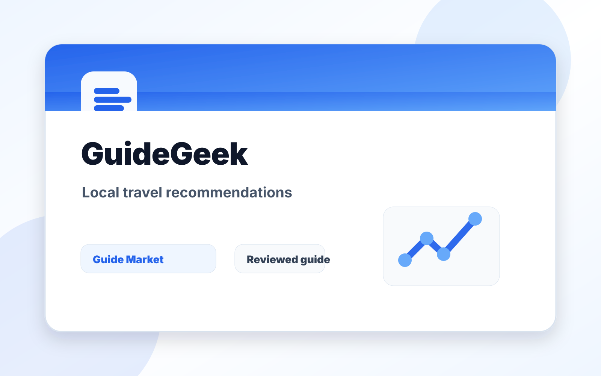
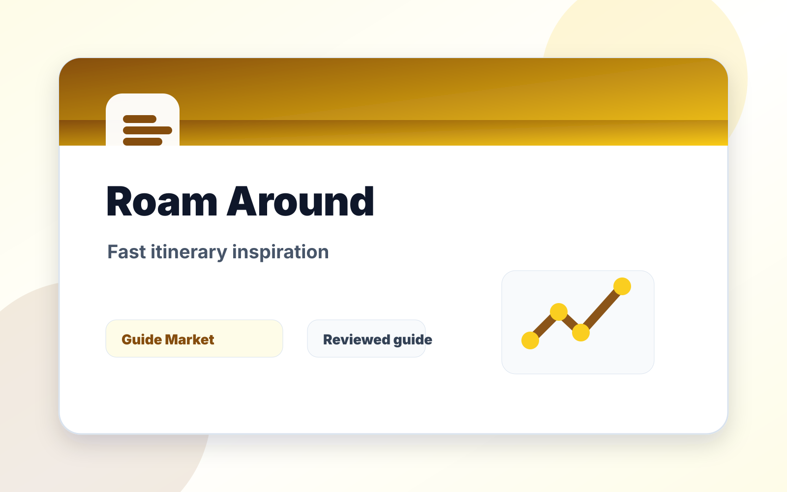

Best AI Tools for Travel Planning in 2026: Complete and Realistic Guide
Published May 12, 2026. Last updated May 24, 2026. Estimated reading time: 12 minutes.
Planning a trip can be one of the most exciting parts of travel, but it can also become one of the most exhausting. Flights, hotels, activities, budgets, routes, transport times, and restaurant choices can take hours to compare. After testing several AI travel tools across different trip styles, this guide explains which ones are actually useful, where they are weak, and how to combine them without trusting them blindly.



The real problem this guide solves
This guide is not meant to be a quick list of names. The real problem is choosing travel planning tools that solve a real task instead of adding another unused subscription. That requires context: what the reader is trying to do, what can go wrong, and which option is useful after the first impressive demo.
I evaluate ChatGPT, Gemini, Hopper, Trip Planner AI, GuideGeek, Roam Around through a practical lens: how easy they are to start, how much control they give you, what must be verified manually, and whether they still make sense after the novelty fades. A recommendation only matters if it survives a realistic task.
Practical comparison criteria
| Criterion | What it reveals | How to test it |
|---|---|---|
| Use-case fit | Whether the option solves the actual job, not a generic version of it. | Test it with this scenario: a reader using travel planning tools on one realistic project and comparing the output side by side. |
| Control | Whether you can edit, verify, export, or adapt the result. | Try to change the output without starting from zero. |
| Reliability | Whether the recommendation remains useful when facts, prices, or constraints change. | Check the official source and compare with at least one alternative. |
| Long-term value | Whether the workflow will be used repeatedly. | Ask if it saves time next week, not only today. |
Pros and cons
Pros
- Gives a clearer starting point for a messy decision.
- Helps compare options using the same real-world scenario.
- Creates a repeatable workflow instead of a one-off answer.
Cons
- Still requires manual verification and judgment.
- Free plans or public information may be limited or outdated.
- Choosing too many options can create more work, not less.

ChatGPT
Trip Planner AI
GuideGeek
Roam AroundEditorial verdict
My honest pick is to use ChatGPT before the trip, Gemini and Google Maps during the trip, and Hopper when flight price matters most. Trip Planner AI, GuideGeek, and Roam Around are useful in specific situations, but I would not rely on a single tool for the entire journey. The best travel workflow is a stack: one tool for ideas, one for live information, one for prices, and one human who verifies the important details.
Why AI Is Changing Travel Planning
The main advantage of AI is simple: it can process a huge amount of information much faster than a person. While a traveler may spend hours comparing hotels, checking reviews, reading transport notes, building an itinerary, or searching for restaurants, an AI assistant can create a first plan in seconds. That speed is useful, but speed alone is not the most important change.
The more interesting shift is personalization. A good AI travel tool can adapt recommendations to your budget, destination, travel pace, food preferences, interests, group size, and even the kind of experience you want. Instead of giving everyone the same top-ten list, it can help design a trip around the way you actually like to travel.
There is a catch, though. Travel information changes constantly. Opening hours, prices, flight schedules, transit routes, events, visa rules, and restaurant availability can change after an AI answer is generated. That means AI is excellent for structure, inspiration, and organization, but the final booking decisions still need live verification.
What a Good AI Travel Tool Should Have
A good travel AI needs real personalization. Many tools still generate generic itineraries that feel like copied tourism pages. The best tools ask for your preferences or let you keep refining the answer until the trip feels like yours. If a tool cannot adapt to budget, pace, interests, or travel style, it is probably just a basic itinerary generator.
It also needs current information. For travel, outdated details are not a small problem. A closed museum, changed train schedule, sold-out attraction, or wrong restaurant hour can damage a whole day. The strongest AI workflows either connect to live sources or make it easy to verify the final plan through Google Maps, official websites, booking pages, and transport apps.
Route optimization matters too. A list of good places can still become a bad itinerary if the order makes no sense. The best travel tools group activities by area, estimate travel time, reduce backtracking, and leave enough buffer for meals, queues, weather, and tiredness. Finally, the tool should be easy to use. AI should simplify planning, not add another complicated dashboard.
Quick Comparison: Best AI Tools for Travel Planning
| Tool | Best for | Free option | Strongest point | Main weakness |
|---|---|---|---|---|
| ChatGPT Official site | Personalized itineraries | Yes | Huge flexibility | Some details need verification |
| Gemini Official site | Live trip assistance | Yes | Google ecosystem and Maps context | Less creative than ChatGPT |
| Hopper Official site | Cheap flights and hotel timing | Yes | Price prediction and alerts | Less useful for activities |
| Trip Planner AI Official site | Automatic visual itineraries | Yes | Day-by-day organization | Can feel generic |
| GuideGeek Official site | Local recommendations | Yes | Travel-specific advice | Less flexible |
| Roam Around Official site | Fast trip inspiration | Yes | Instant itineraries | Less depth |
1. ChatGPT: The Most Complete AI for Travel Planning
ChatGPT is probably the most versatile AI tool for planning trips because it does not feel like a traditional travel app. Instead of forcing you through fixed fields, it lets you talk naturally. You can ask for a ten-day Japan itinerary focused on anime, local food, and less touristy neighborhoods, then ask it to make the plan cheaper, slower, more romantic, more nature-focused, or better for nightlife.
That conversational flexibility is its biggest advantage. Traditional travel apps usually show flights, hotels, or activities. ChatGPT can help build the whole trip from scratch: daily itinerary, neighborhood recommendations, transport ideas, packing lists, cultural notes, budget estimates, restaurant categories, and mistakes to avoid. It is especially useful for complex trips with multiple cities, road trips, interrail routes, family constraints, or last-minute changes.
The tool is also strong for scenario planning. You can ask for a relaxed version and an intense version of the same itinerary. You can ask what to skip if it rains, what to do near the hotel after a late arrival, or how to rebuild the route if a museum is closed. This is where ChatGPT feels less like a search engine and more like a planning partner.
The weakness is that it still needs verification. Prices, opening hours, restaurant availability, local transport, visa rules, and event schedules can be wrong or outdated. It can also recommend places that appear often online, which means some suggestions may be tourist-heavy. My real opinion is that ChatGPT is the best general travel-planning assistant, but it should create the plan, not be the final source of truth.
2. Google Gemini and Google Maps
Gemini becomes especially useful when it works alongside the Google ecosystem. While ChatGPT is excellent before the trip, Gemini and Google Maps are strongest when you are already at the destination and need live, practical information. If you ask what to do near you tonight in Paris, the value comes from nearby places, opening hours, ratings, route context, and current search information.
This makes Gemini ideal for city trips, quick getaways, and flexible travel days where you improvise. It can help find cafes, supermarkets, pharmacies, restaurants, bars, events, museums, transit options, and nearby alternatives. That is powerful because many travel decisions happen in the moment, not weeks before departure.
The tradeoff is creativity. Gemini often feels more practical than imaginative. Its recommendations can feel closer to Google Maps results than a deeply personalized travel concept. That is not necessarily bad. During a trip, reliability and location context can matter more than creativity. If I am hungry, tired, and far from the hotel, I want accurate nearby options more than poetic travel inspiration.
My real opinion is that Gemini is one of the best tools to use during the trip. It saves time, reduces manual searching, and makes unfamiliar cities easier to navigate. I would pair it with ChatGPT rather than choose one over the other.
3. Hopper: Best AI for Finding Cheap Flights
Hopper is one of the most useful travel apps for people who care about saving money. Its main value is price prediction. It analyzes large amounts of flight and hotel price data to estimate whether prices are likely to rise, fall, or stay similar. For travelers who are flexible with dates or destinations, this can be genuinely helpful.
The strongest feature is automatic alerts. You can follow a route and receive notifications when Hopper detects a good moment to book. That is useful because many travelers buy too early, too late, or without knowing whether the current price is normal. Hopper does not remove the need to compare, but it gives you a smarter starting point.
Its interface is also simple compared with many flight-search platforms. It works best if your priority is price timing rather than itinerary design. If you can move dates, watch routes over time, or book when the price is favorable, Hopper can be valuable. If your trip dates are fixed and you need deep destination planning, it is less central.
The downside is that Hopper is not a full travel planner. It is much better for flights and hotels than for activities, local routes, restaurants, or cultural planning. I would use Hopper for the money part of the trip, then use ChatGPT, Gemini, or Google Maps for the experience part.
4. Trip Planner AI
Trip Planner AI is built specifically for automatic itinerary creation. You enter the destination, travel dates, budget, and trip style, and the tool generates a day-by-day plan with activities, route logic, and time organization. Compared with a general assistant, it feels more structured and visual.
The best part is the interface. It is useful for moving activities, reorganizing days, and seeing the trip as a plan rather than a long text response. For groups, beginners, or travelers who do not want to build an itinerary from scratch, that visual organization can save a lot of time.
Trip Planner AI is also helpful for route optimization. It can group activities more logically and reduce the classic mistake of crossing the city several times in one day. That matters more than people think. A plan full of good places can still be exhausting if the order is bad.
The weakness is personalization depth. Some itineraries can feel similar to standard tourism plans. It is excellent for getting a usable draft quickly, but I would still edit the plan and add more personal interests. My opinion is that Trip Planner AI is a strong beginner-friendly tool, especially for fast trips and people who prefer visual planning.
5. GuideGeek
GuideGeek is different because it is focused on travel rather than being a general-purpose AI assistant. That specialization can make its recommendations feel more tourism-aware. It is especially interesting for local recommendations, food ideas, neighborhoods, cafes, and activities that feel less like the same standard checklist.
Many AI tools recommend the most obvious monuments, restaurants, and attractions because those appear everywhere online. GuideGeek tries to help with more practical, destination-focused advice. If you dislike tourist traps or want a more local angle, it can be useful.
Its weakness is flexibility. It does not feel as endlessly adaptable as ChatGPT. If you want to design a highly specific multi-country route, rewrite the trip repeatedly, compare budgets, and generate detailed scenario plans, ChatGPT still feels stronger. GuideGeek is better as a travel-specific idea source.
My real opinion is that GuideGeek is worth using when you want local flavor or when the standard itinerary feels too generic. I would not make it my only planning tool, but I would absolutely use it to improve the quality of recommendations.
6. Roam Around
Roam Around became popular because it creates itineraries almost instantly. You enter a city and a number of days, and it gives you a basic plan very quickly. That speed is the main reason to use it.
It works well for short getaways, inspiration, and indecisive travelers who need a starting point. If you are visiting a city for two or three days and do not know where to begin, Roam Around can create a quick base itinerary that you can then refine elsewhere.
The downside is depth. The itineraries can feel basic, and the recommendations may not be as personalized as what you can get from ChatGPT or as live as what you can get from Google tools. It is not the tool I would use for a complex trip, a long route, or a highly specific travel style.
My honest view is that Roam Around is good for inspiration and speed. It is not the most complete planner, but it can be useful when you want a fast first draft and do not want to stare at a blank page.
Common Mistakes People Make With AI Travel Planning
The first mistake is asking questions that are too generic. “Plan a trip to Italy” will usually produce a generic answer. A much better prompt is: “Plan a cheap ten-day trip through Italy focused on local food, small towns, trains, and avoiding tourist traps.” The quality of the answer changes dramatically when the constraints are clear.
The second mistake is depending on one AI tool. The strongest strategy is to combine tools. Use ChatGPT for the itinerary, Hopper for flight prices, Gemini and Google Maps during the trip, and official websites for final verification. A single AI answer should not control every travel decision.
The third mistake is not verifying important information. Always check opening hours, ticket availability, transport routes, prices, visa requirements, local rules, hotel policies, and reservation details. AI can make planning faster, but it can also sound confident when it is wrong.
The fourth mistake is overpacking the itinerary. AI often tries to be helpful by adding too much. A realistic trip needs buffer time. Leave space for slow meals, weather, transport delays, rest, wandering, and unexpected discoveries. The best itinerary is not the fullest one; it is the one you can actually enjoy.
Best AI Travel Workflow
My recommended workflow is simple. Start with ChatGPT and describe the trip in detail: destination, dates, budget, pace, interests, people traveling, food preferences, mobility limits, hotel area, and must-see places. Ask for two versions: a relaxed itinerary and a more intense itinerary. Then ask it what details you should verify manually.
Next, use Hopper or another flight tool to check whether the dates make financial sense. If changing the dates saves a lot of money, return to ChatGPT and ask it to rebuild the itinerary around the cheaper travel window. This prevents the common mistake of planning a beautiful trip around expensive dates.
After that, move the route into Google Maps. Check distances, transit times, neighborhoods, and opening hours. During the trip, use Gemini and Google Maps for live nearby decisions. If the weather changes, if you get tired, or if a place is closed, ask for alternatives near your current location.
Finally, save the verified version of the trip somewhere simple: notes app, Google Docs, Notion, or a shared document. Include bookings, addresses, tickets, backup activities, emergency details, and offline access. AI is best for planning; your final travel document should be stable, checked, and easy to open.
Final Recommendation
AI has become genuinely useful for travel planning. It can make trips faster to organize, easier to personalize, and less stressful to adjust. But the best results come from using AI realistically. These tools are not magic booking agents. They are planning assistants that still need human judgment.
After testing several tools, I think ChatGPT remains the best overall option for creating personalized itineraries. Gemini and Google Maps are excellent during the trip because they are practical and location-aware. Hopper is one of the best options for saving money on flights. Trip Planner AI is great for visual organization. GuideGeek helps when you want local travel recommendations. Roam Around is useful for quick inspiration.
The key is to combine them depending on what you need. Use AI to reduce the boring planning work, but verify the details that can affect money, time, safety, and reservations. That balance is what turns AI travel planning from a gimmick into a genuinely useful way to travel better.
Official Links
FAQs
What is the best option for beginners?
The best beginner option is usually the one that solves one clear task with the least setup. Start with a free or simple workflow before paying.
Are paid plans worth it?
Only when the paid feature removes a real limit such as exports, collaboration, higher usage, integrations, or better control.
Can these tools replace human review?
No. They can speed up drafting and comparison, but important facts, public content, schoolwork, business decisions, and financial details still need review.
How do I avoid generic results?
Use a specific brief with goal, audience, constraints, examples, and the format you want. Then ask the tool to revise against clear criteria.